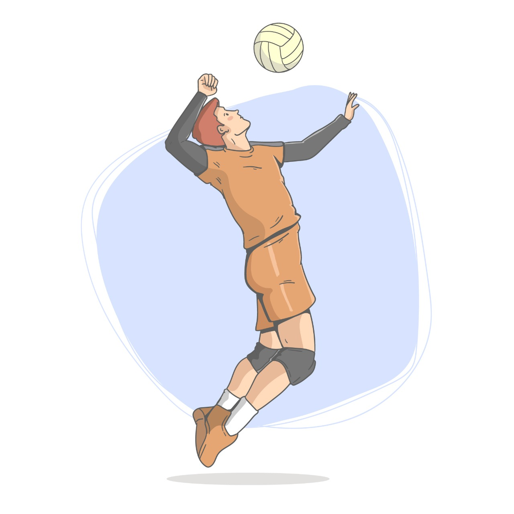

How does muscular power evolve in adolescent volleyball practitioners?
Introduction
Volleyball is a sport with high integrity in jumping power, which leads to several useful parameters such as its vertical distance, its muscular performance in the lower limbs and progression of aerobic efforts, so we decided to investigate how volleyball develops. potency in adolescents between 12 and 18 years. Next, you will find the documents that were used for the investigation and an interview with an international professional who talks to us about the subject.
Comparison of lower limb power tests by two indirect methods in sub-18 category volleyball players

It gives us an interesting vertical jump test in which it is viable as a physical test, for modern volleyball, which assesses leg power, since in this way it adds an integration so that the physical trainer can plan a strength-speed program. with the intention of improving their physical performance on the pitch. It adds the need to develop great power in volleyball players, mainly in the lower limbs, aspects that were evaluated in ten under-18 category volleyball athletes from the National Volleyball School by indirect Lewis and Harman methods, to which a cross-sectional study in the stage of general physical preparation. As empirical methods, measurement and indirect tests were used to assess jumping power. Satisfactory results are obtained in both tests, fundamentally after submitting the athletes to a system of exercises that show the values of Harman's power with a higher level of information for the coach, since in this he takes into account the action of gravitational acceleration that must be overcome in the phase takeoff.
Enrique Lorenzo Henríquez Hernández
Leivis Osmani García
León
Lino Michel Valdés Cabrera
Valia Alina Crespo Almeida
2022
PODIUM
Influence of the physical capacity of speed in the jumping power in school volleyball

An importance is given to integrated training in which the need to implement various components of the preparation to achieve higher performance is evident. Therefore, the plyometric method is used to enhance the jumping motor skill, but other capacities such as speed could influence directly or indirectly. In this sense, it is determined if the physical capacity of speed influences the jumping power of the school category volleyball player. The population of volleyball players of the La Salle Educational Unit (experimental group 1: 26 students) and the Oswaldo Lombeyda Educational Unit (control group 2: 25 students), male gender and category 13-14 years old, were studied. The groups underwent the same training, except for the experimental group, which implemented a work strategy with physical stimuli, prioritizing speed loads for lower limbs.
Miguel Alexander Zapata Cuaspa
Karla Paola Ayala Vega
Leonardo Xavier Quintanilla Ayala
2021
PODIUM
Effect of plyometric training on explosive strength in girls and boys girls pubertal volleyball players

He talks about how the same training can generate an improvement in the capabilities of each person involved thanks to the difference in muscle physiology and adaptations that each individual generates, and also indicates that the rest periods can generate significant effects on the improvement of explosive strength. On the other hand, it clarifies that both pubertal maturation and biological maturation should be taken into account for plyometric training, seeking to have an impact on physiological variables of power and maximum strength.
Vilela, Gustavo Caniuqueo-Vargas
Alexis Ramirez-Campillo
Rodrigo
Hernández-Mosqueira
Claudio da Silva, Sandro
2021
Retos: Nuevas Perspectivas de Educación Física,
Deporte y Recreación
Vertical jump analysis of first category volleyball players category

Plyometric methods allow us to improve coordination, strength and speed, allow the volleyball player to perform more efficient accelerations, changes of direction can be performed more quickly, be more explosive in ballistic movements, be more skillful in the execution of jumps and throws, in short, be faster in general terms. In addition to this allows us to see that the reactive strength index (RSI) when used as a means of monitoring the load, allows a correct planning of plyometric training and fulfills an objective within the preparation for volleyball athletes, since it is taken into account for the intensity of plyometric training, but the work must be well controlled because otherwise it can cause injuries in athletes.
José Carlos García Bohigas
Yumilka Daisy Ruiz Loaces
Ídolo
Gilberto Herrera Delgado
2021
PODIUM
Photobiomodulation therapy and NMES improve muscle strengthand jumping performance in young volleyball athletes: a randomized controlled trial study in Brazil

It gives us a feasibility comparison between photobiomodulation therapies and NMES, which put them to the test in a quadriceps femoris training for muscle power support in volleyball players.
Ronaldo Alves da Cunha
Carlos Eduardo Pinfildi
Alberto de
Castro
Pochini
Moisés Cohen
2019
Springer-Verlag London Ltd., part of Springer Nature.
Muscle Architectural and Functional Adaptations Following 12-Weeks of Stretching in Adolescent Female Athletes

With this article we can rigorously recognize the evolution and physiological and morphological changes specifically of the lower body muscle, the gastrocnemius of young adolescents from 13 to 15 years who are the subject of our research, giving us a clear picture of the adaptation to training according to the loads and the different stimuli that have to be performed for a good performance when playing volleyball, knowing that many of them are in the stage of hormonal development where they can possibly reach the highest peak of the training curve, making a follow-up athlete to athlete interacting and knowing all their possible physiological adaptations through the following years, making the most of their evolution, taking into account the focus on explosive strength and power that are determining factors for professional volleyball which in the end is the goal.
Ioli Panidi, Gregorio C. Bigdanis
Gerasimos Terzis, Anastasia
Donti
Andreas Konrad, VasilikiGaspari
Olyvia Donti
2021
Frontiers
Reliability of the Modified CKCUEST and correlation with shoulder strength in adolescent basketball and volleyball players

We know that when talking about sport, we speak of a fully comprehensive term, in which large muscles are important as small, in this case through the research conducted and given the studies previously done we can investigate the results obtained that adolescents who are prone to overtraining loads have a tendency to suffer shoulder injuries more easily, because it does not respect the process of progressions in strength and dosages can become very high, generating an overexertion of the muscle that at the moment may respond with power but in the medium and long term this muscle will not have the same strength, because at the time that the muscle needs to recover its broken fibers and its sarcomere fatigued, this is a determining negative factor to improve, since for volleyball the upper train and the portencia in the shoulders is fundamental for the good movement of the technique in the shot and the power that is applied to the shot to obtain the objective.
Philippe Decleve, Joaquin Van Cant
Ann M. Cools
2021
Brazilian Journal of Physical Therapy
Evaluation of the Effect of Core Training on the Leap Power and Motor Characteristics of the 14-16 Years Old Female Volleyball Players

The jump as a determinant and fundamental movement for volleyball, allows us to play more effectively our role within the team, training at low and high intensities in this juvenile stage is essential with rest times and adequate supplementation, in order to obtain the most successful results, taking into account factors such as the biological age of adolescents, their hormonal and vascular development allows a more individualized training methodology according to the desired objectives, noting that their heart rate in different stages of the game and more at the time of the vertical jump is close to 100%, reaching its maximum level of fatigue, needing the recovery of phosphagen immediately and making use of its lactic acid in the moments of more oxygen deficiency; Explosive strength and power are pillars of this sport that must be progressively trained, generalizing a physiological and morphological adaptation in the muscle that allows it to tolerate much higher intensities, which increases its sporting performance at the time of competition.
Omer Bilici, Muzaffer
2018
Journal of Education and Training Studies
Effectiveness of core muscle training in the prevention of shoulder injuries in overhead throwing sports: a systematic review
It provides an effectiveness of a training program for the prevention of shoulder injuries in overhead throwing athletes through the strengthening of the upper body where clear evidence of its benefits is presented. In which it is based on a systematic review of the literature regarding the available evidence about the strategies for the prevention of shoulder injuries in sports that use overhead throwing through the training of the Core musculature, consulting the databases PubMed, PEDro and ScienceDirect published between January 2014 to May 2020. It conducts a total of five studies of which two are clinical trials and three systematic reviews. The totality of the studies are about the prevention of shoulder injuries in handball, baseball and volleyball. That gives support to the aforementioned.
J. Azócar-Gallardo
Y. Azócar-Gallardo
A. Ojeda-Aravena
R.
Cárdenas-Mansillac
J. Montecinos-Zuñigac
2021
Revista Andaluza de Medicina del Deporte
Comparative Study of Anthropometric Measurement and Body Composition Between Elite Handball and Volleyball Players from the Serbian National League.

It is well known that excess fat mass compromises physical performance, acting as dead mass in activities where the body must lift repeatedly during locomotion and jumps, decreasing performance and increasing energy demand. In most sports, it is a ballast, but in some it is necessary. Musculoskeletal mass, on the other hand, is an indicator of athletic performance, because it contributes to energy production during high intensity activities and provides absolute strength to athletes. It follows that modern athletes must be fast, able to perform explosive, powerful movements, and must have more muscle mass and less fat tissue.
Masanovic, Bojan
Gardasevic, Jovan
Bjelica, Dusko
2021
International Journal of Morphology